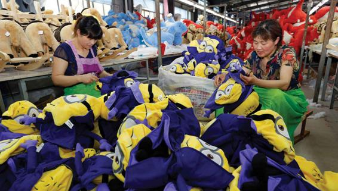

Basic Concepts Understand that modern economies are based on the division of labor and economic interdependence.
Theories of Work and Economic Life Consider the different forms that capitalism has taken, and understand how a shift in the predominant form of industrial organization in modern society has shaped the kinds of jobs people are likely to find.
Current Research on Work and Economic Life Recognize the importance of the rise of large corporations; consider particularly the global effect of transnational corporations. Learn about the challenges facing workers today, including growing unemployment, the decline of labor unions, the rise of low-wage work, and the global trading system.
Unanswered Questions Learn about the effect of automation on employment. Consider how work will change in the future.
You may suspect that this is a trick question—but it isn’t! Nor is it an infomercial for leading athletic shoe brands. Whatever your preferred brand, one thing is certain: Your favorite brand did not actually make the shoe you are wearing. Whether you buy a branded athletic shoe for running, walking, or cycling, or whether you prefer basketball, tennis, or soccer, your favorite brand’s job was to design the shoe, launch an effective marketing campaign, and eventually convince you—and millions of others—that this particular shoe, in this particular style, and most likely at this (often seemingly outrageous) price, is the key to your athletic success, whether you are a weekend walker or a national track star.
The company that actually made your favorite athletic shoe has a one-in-five chance of bearing a name that you most likely have never heard of: Yue Yuen, the Hong Kong subsidiary of a Taiwanese firm, Pou Chen, which specializes in footwear manufacture. Pou Chen is a transnational corporation and the largest manufacturer of branded athletic footwear in the world. Its nearly 360,000 workers in China, Vietnam, Indonesia, Bangladesh, Myanmar, Cambodia, and Taiwan turn out 300 million pairs of shoes every year, reportedly accounting for approximately 20 percent of branded athletic and casual footwear sold in the world today (Wu, 2019). Pou Chen’s sprawling factory in Dongguan, in southern China, produces nearly a million pairs of athletic shoes a month for Nike, Adidas, Reebok, and practically every other major brand. (In fact, Usain Bolt wore a pair of Puma shoes made entirely at a Pou Chen facility while competing in the 2016 Rio Olympics.) Working with these numerous brands, Pou Chen engages in research to develop the best materials to use in its products; has developed its own advanced manufacturing technology; and is engaged in high-tech logistics, coordinating its global supply chain to ensure that all the components required in shoe manufacture are acquired in a timely fashion (Appelbaum and Lichtenstein, 2006; Yue Yuen, 2014; Fortune, 2016).
Yet all is not rosy in Yue Yuen factories. On April 14, 2014, some 45,000 workers in the company’s Dongguan factories went on strike. The 10-day strike occurred when it was discovered that Yue Yuen had been systematically underpaying its state-mandated social insurance and housing benefits to its workers. The workers demanded complete restitution of the missing payments, as well as a higher living allowance. The strike, which shuttered factories and cost Yue Yuen $27 million in lost business, ended when the Chinese government ordered Yue Yuen to pay up. The settlement reportedly increased yearly employee costs some $31 million (Wong, 2014), which apparently did not sit well with the company and was one reason it decided to open its Myanmar factory. And although Yue Yuen’s profits reached nearly a half billion dollars in 2017, the firm refused to comply with a Cambodian Arbitration Council ruling that the company compensate 478 workers who were entitled to severance pay when Yue Yuen closed the factory—a payout that would have cost Yue Yuen less than a million dollars.
Pou Chen/Yue Yuen is an example of an important development in the global economy, one that is reshaping the nature of work throughout the world. Countries once referred to as “developing economies”—now frequently termed “emerging economies”—are playing an increasingly important role as suppliers and assemblers of the products consumed throughout the world. Design and marketing may remain centered in the United States, Europe, Japan, and a few other advanced economies, but the actual goods are produced by independently owned factories throughout the world. Giant transnational corporations—owned by individuals from China, Hong Kong, South Korea, and Taiwan—operate apparel, electronic assembly, and other consumer goods factories around the world.
Global supply chains today dominate the world economy, shaping the nature of work and economic life. While they have provided an enormous array of low-cost consumer goods, they have also resulted in many jobs being relocated to low-wage countries where the goods are produced—countries in which labor laws and environmental protections are either nonexistent or poorly enforced. There are benefits and costs to global production systems, both in the advanced industrial economies and in the emerging economies. In this chapter we will examine both sides of global production, in order to gain a better understanding of its effects on American workers.
When you buy a pair of jeans, whatever its brand might be, it may well have been made in Mexico, Nicaragua, or the African country of Lesotho, in a factory owned by Nien Hsing, a Taiwanese textile firm that makes clothing for such well-known brands and retailers as Target, Gap, and Levi’s (Nien Hsing, 2012). The sweatshirt or hoodie sold in your campus bookstore—the one that bears your college’s logo or name—was certainly not made by your college, nor was it made by Nike, Russell Athletic, or Knights Apparel, three of the leading brands that design products specifically for the college market. It, too, was made in a factory overseas, anywhere from the Caribbean to China.
The Pou Chen/Yue Yuen case illustrates another important point: Workers are becoming more militant everywhere. Even in China, where the government has never approved of labor unrest, workers until fairly recently were able to engage in unauthorized strikes to protest low wages and poor working conditions. Today, the Chinese government has taken an increasingly hard line position on worker unrest, severely punishing workers who even speak out against factory conditions. Businesses also respond to worker militancy, and the rising wages it often produces, by moving to lower-cost areas such as Vietnam and Myanmar, where the government is more likely to quickly repress strikes. This dynamic greatly affects work and economic life in the United States, as many manufacturing jobs—and increasingly service-sector jobs, from accounting to software engineering—are moving to low-wage countries. What kinds of jobs are replacing them back home? What does it mean for the nature of work when brands such as Nike or retailers such as Walmart rely on foreign firms halfway around the world to actually manufacture the products that bear their names or are sold on their shelves?
Countries such as China have played a central role as suppliers and assemblers of the products consumed across the globe. Rising wages in China, however, have led some firms to relocate production to lower-wage countries such as Vietnam and Cambodia.
Most adults in capitalist economies spend the better part of their waking hours at work. The jobs they do determine their economic prospects, shape their lifestyles, and provide them with friends and acquaintances. Yet the nature of work is often determined by forces far beyond their control, and sometimes even beyond their understanding. In this chapter, we analyze the nature of work in modern societies and look at the major changes affecting economic life today. We investigate the changing nature of industrial production, the ownership structure of large business corporations, and the changing nature of work itself. We then turn to some important unresolved questions about our economic future.